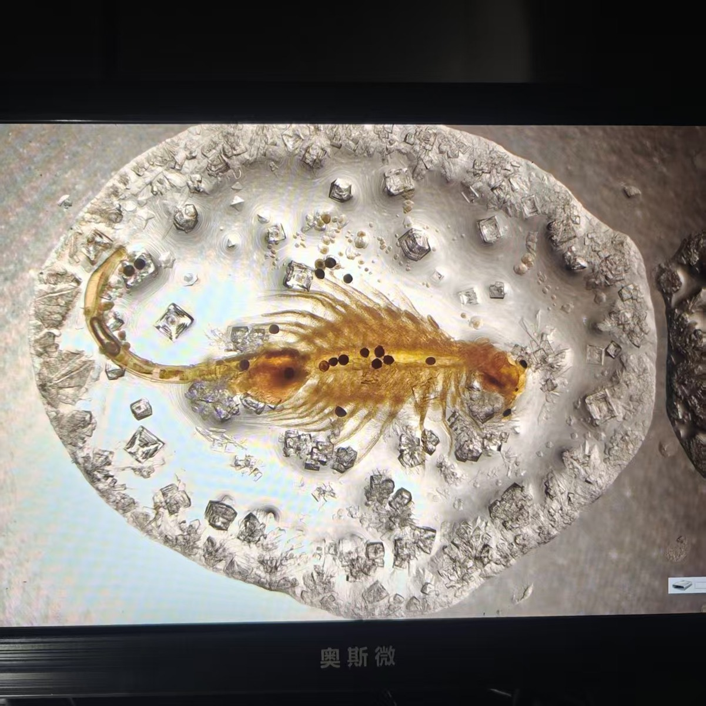

Enter the work →
Microalgae · Industry · Art
Where microscopic life meets poetic form.

About
Wenjie Huang is a PhD student working in microalgae industrial biotechnology. His research traces how tiny photosynthetic organisms scale from laboratory bench to industrial reality — and along the way, he began noticing the aesthetic and philosophical vocabulary hidden in petri dishes, salt crystals, and algal blooms.
This site is a journal of those observations, moving between scientific rigor and artistic sensibility.
Research
From strain cultivation to process design, my work focuses on turning microscopic photosynthesis into viable industrial systems: cultivation optimization, downstream processing, and the environmental trade-offs of scaling up.
Artworks
Four works where scientific observation becomes visual language.
Contact
For research collaborations, artistic commissions, or simply a conversation about algae.
ArtWenjie@yeah.net